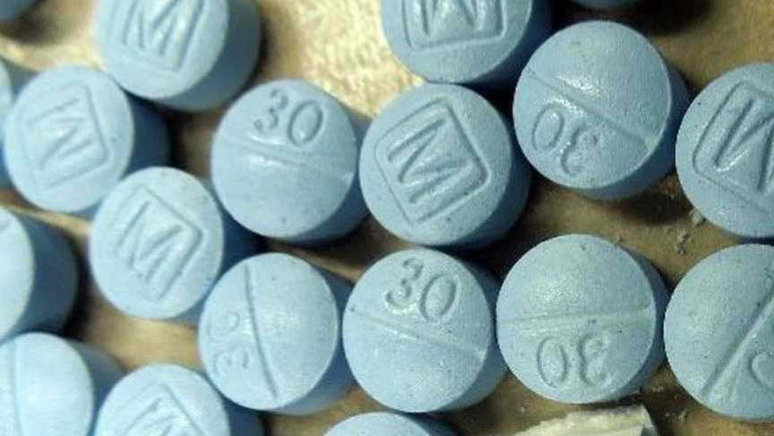
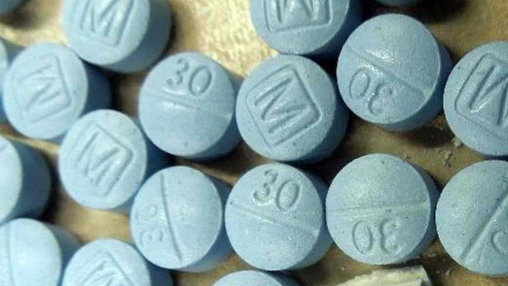

Counterfeit Oxycodone Vendor "KingofKeys" Imprisoned
~2 min read | Published on 2023-04-09, tagged Counterfeits, Darkweb-Vendor, Indicted using 393 words.
An Arizona man will spend over six years behind bars for distributing fentanyl-laced pills through the dark web and encrypted messaging platforms.

The US Attorney's Office for the Eastern District of Virginia revealed that 32-year-old John Ryan McKernan of Scottsdale, Arizona, was convicted of distributing counterfeit Oxycodone and Xanax tabs through the "KingofKeys" vendor profile on Vice City Market. McKernan also sold the pills via Wickr and Signal under the usernames "magicboy27" and "KofK" respectively.
According to court documents, FBI investigators first came across the KingofKeys vendor profile on Vice City in May 2022. The vendor joined the market in August 2021 and had completed 139 orders.
In May 2022, the investigators made two undercover purchases from the vendor, the first one via Vice City and the second one through Wickr. In both cases, the investigators received USPS priority mail envelopes that carried light blue pills placed inside multiple mylar bags. The pills had "M" and "30" stamped on the sides and tested positive for fentanyl.
Information acquired from USPIS revealed that the shipping labels used on the packages had been purchased from a PostNet in Scottsdale.
On being questioned, the PostNet employee turned witness revealed that the packages had been mailed by a '20 something man going by the name Johnny.' The employee also had the mailer's email address: [email][email protected][/email]. The email address was associated with McKernan's name.
Fingerprint analysis on one of the packages revealed that four fingerprints found on the envelope were a match to McKernan. Arizona DMV records gave the investigators access to McKernan's address.
Next, the investigator decided to place an order from the vendor through Signal. The vendor contacted the investigators via the KofK Signal account. The vendor had linked the account to a phone number.
Information acquired from Coinbase revealed that there were two accounts associated with McKernan. The first account was registered under [email][email protected][/email] and McKernan's home address. The second account was associated with the email: [email][email protected][/email] and the phone number associated with the KofK Signal account.
Pictures taken by the investigators during the surveillance at McKernan's residence, pictures of McKernan mailing drug packages taken by the PostNet employee, and pictures of drug packages that KofK sent to the investigators confirmed that McKernan had been mailing drug packages to the investigators.
The investigators subsequently arrested McKernan on October 18, 2022.
McKernan was sentenced to six years and six months in prison on April 7, 2023.

The US Attorney's Office for the Eastern District of Virginia revealed that 32-year-old John Ryan McKernan of Scottsdale, Arizona, was convicted of distributing counterfeit Oxycodone and Xanax tabs through the "KingofKeys" vendor profile on Vice City Market. McKernan also sold the pills via Wickr and Signal under the usernames "magicboy27" and "KofK" respectively.
According to court documents, FBI investigators first came across the KingofKeys vendor profile on Vice City in May 2022. The vendor joined the market in August 2021 and had completed 139 orders.
In May 2022, the investigators made two undercover purchases from the vendor, the first one via Vice City and the second one through Wickr. In both cases, the investigators received USPS priority mail envelopes that carried light blue pills placed inside multiple mylar bags. The pills had "M" and "30" stamped on the sides and tested positive for fentanyl.
Information acquired from USPIS revealed that the shipping labels used on the packages had been purchased from a PostNet in Scottsdale.
On being questioned, the PostNet employee turned witness revealed that the packages had been mailed by a '20 something man going by the name Johnny.' The employee also had the mailer's email address: [email][email protected][/email]. The email address was associated with McKernan's name.
Fingerprint analysis on one of the packages revealed that four fingerprints found on the envelope were a match to McKernan. Arizona DMV records gave the investigators access to McKernan's address.
Next, the investigator decided to place an order from the vendor through Signal. The vendor contacted the investigators via the KofK Signal account. The vendor had linked the account to a phone number.
Information acquired from Coinbase revealed that there were two accounts associated with McKernan. The first account was registered under [email][email protected][/email] and McKernan's home address. The second account was associated with the email: [email][email protected][/email] and the phone number associated with the KofK Signal account.
Pictures taken by the investigators during the surveillance at McKernan's residence, pictures of McKernan mailing drug packages taken by the PostNet employee, and pictures of drug packages that KofK sent to the investigators confirmed that McKernan had been mailing drug packages to the investigators.
The investigators subsequently arrested McKernan on October 18, 2022.
McKernan was sentenced to six years and six months in prison on April 7, 2023.